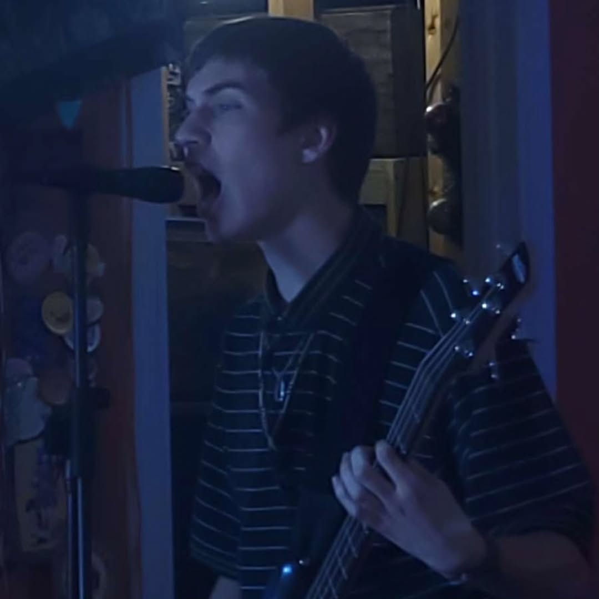
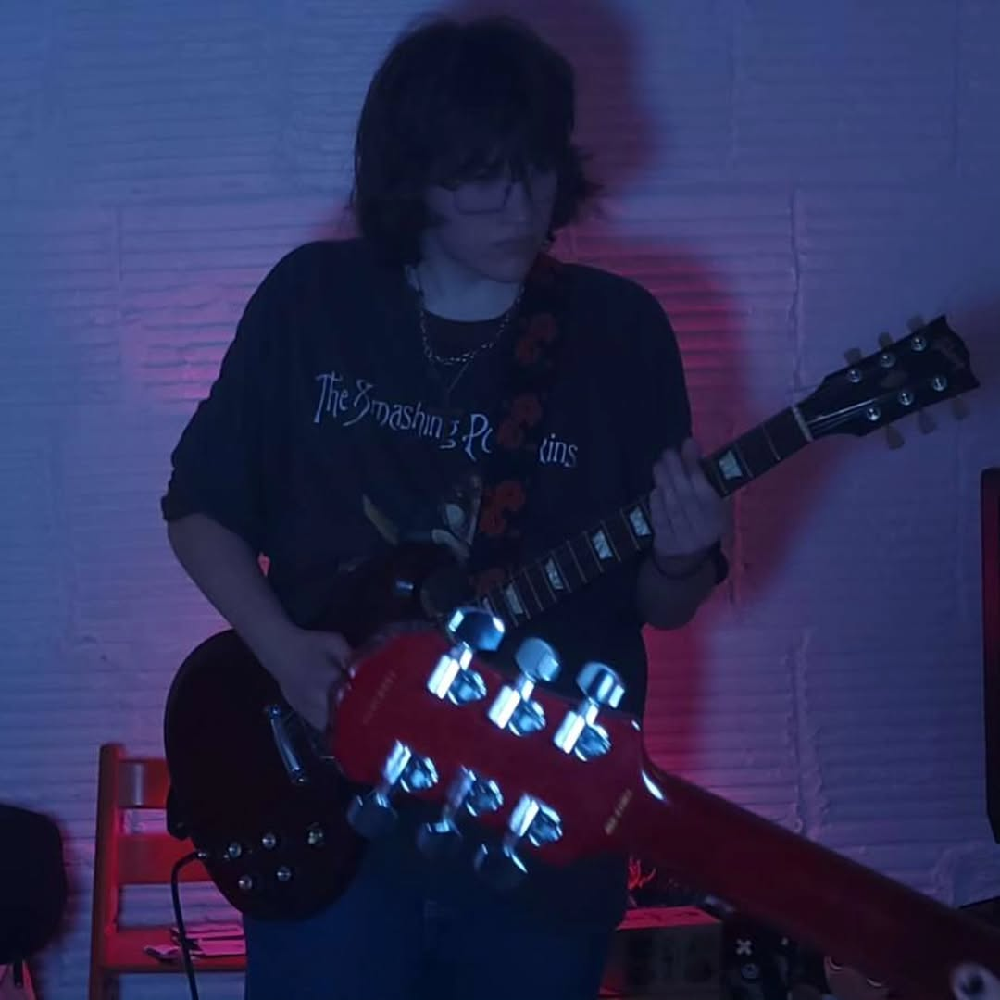
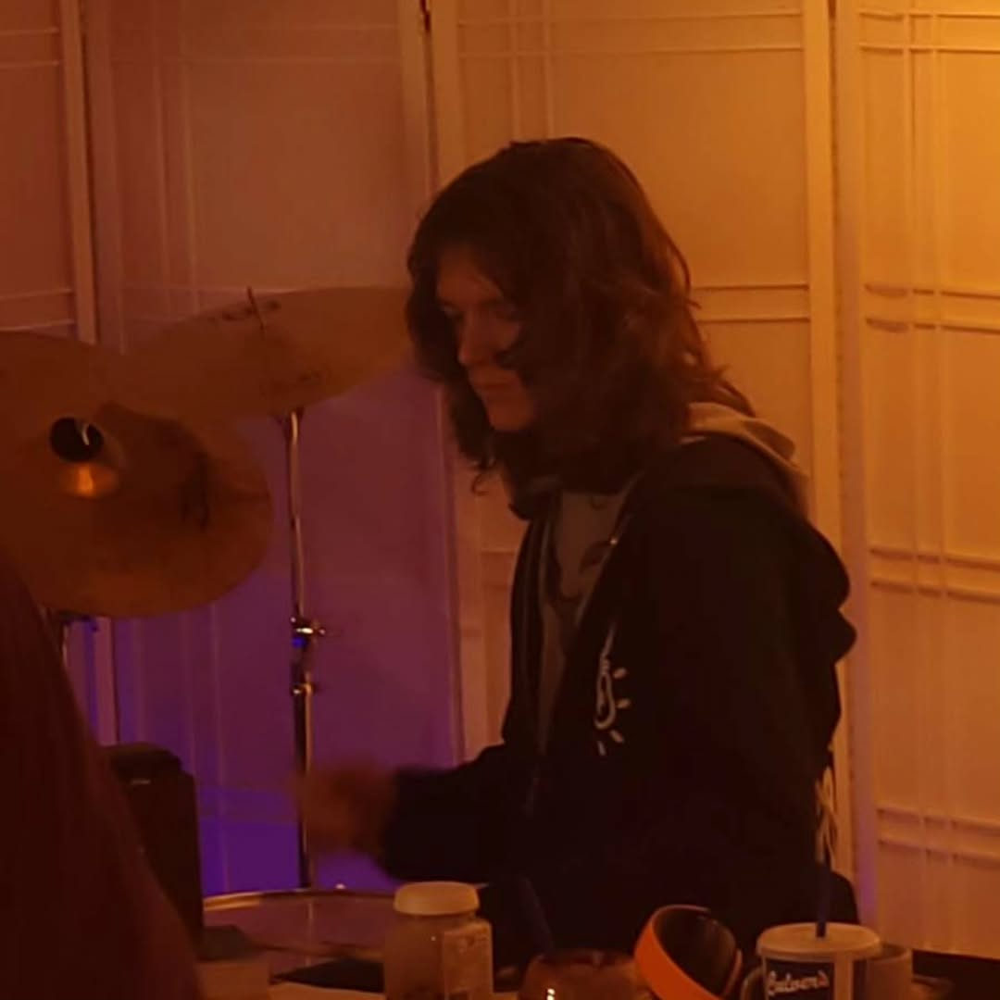
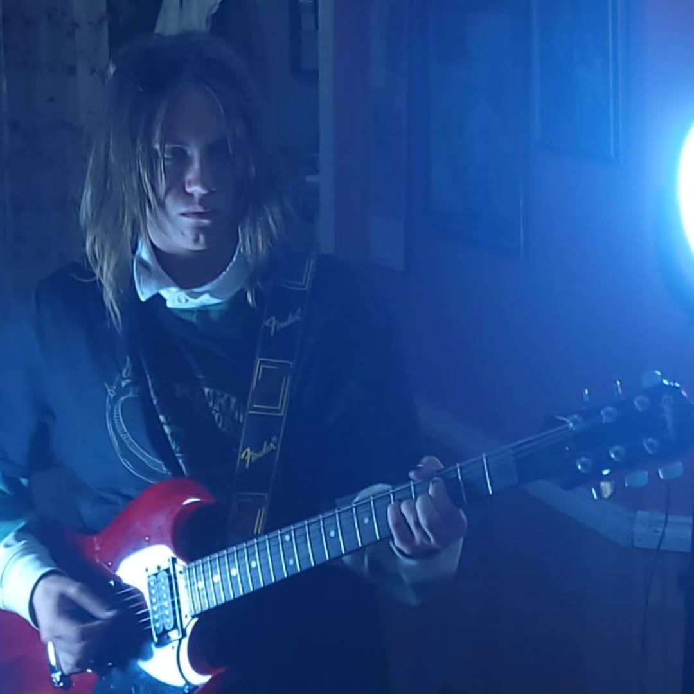

Ethan Murdochs vocals and skills on the bass can be heard throughout every Free Kittens recording session. He and Logan Lane together write most of what the band plays, even on off days- showing that he's serious.

Logan Lane acts as the lead guitarist and one of the main writers for Free Kittens. He dedicates almost all of his free time to perfecting the craft of music, with Free Kittens or not.

Mack Moody is a solid contender for most talented in the group. His crazy drumming skills and insane production techniques make him elite in Free Kittens and make his solo ventures very impressive.

Wolf Knack is a cornerstone of Free Kittens, as one of the two guitar players, he usually plays rythm but also sometimes shares the duty of lead guitarist with Logan Lane.